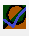
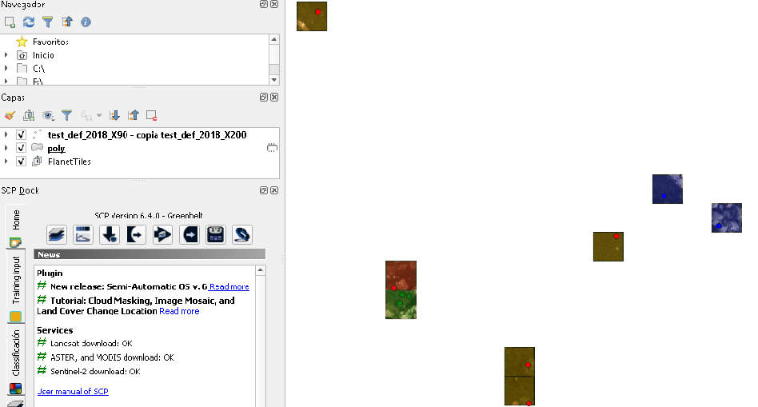

Requirements¶
GQGIS V 3.8
Planet API Key with rights to download global montly mosaics.
Create a enviromental variable name it as “PL_API_KEY” and asing the Planet API key as value
Use¶
This plugin evaluate deforestation comparing 2 planet Tile scenes “Before” adn “After”. You should have a point vector layer. This points should be references to places you want to evaluate.
Open the def_point_val plugin¶
Load the vector layer¶
Chose the time period for before and after images, by year and month for mosaic image.¶
Select a directory (folder) were Planet Tile image will be downloaded.¶
Click over “Aceptar” button.¶
It will takes about 1 sec per point, after that the tiles will be displayed and point will take color blue for tiles will clouds that can’t be evaluated, red for tiles with deforestation and green for tiles without deforestation or nor detect deforestation.
It also will display a polygon vector layer with shadows for every Tile the color oif the shadow:
Blue for Tiles with too much cloud or low visibility
Green for Tiles without deforestation or not detected deforestation
Yellow for tiles with few deforestation detected <4ha
Orange for tiles with medium deforestation detected <10 ha
Red for tiles with a lot of deforestation detected >10ha
Resultado¶
You cant review it over QGIS main window or you can use other plugins for validation an review like Akatama.